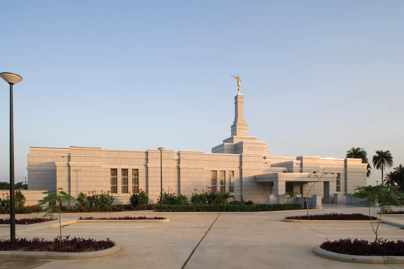
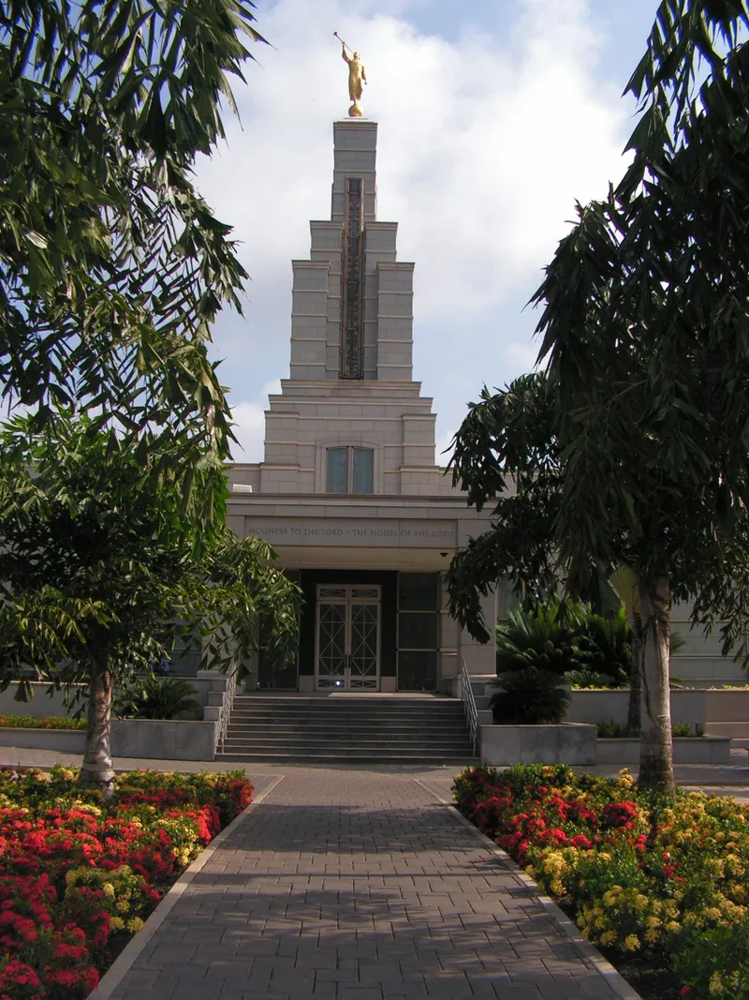
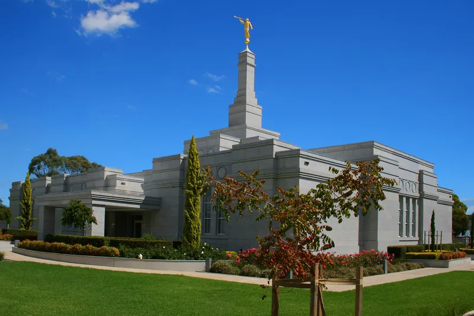
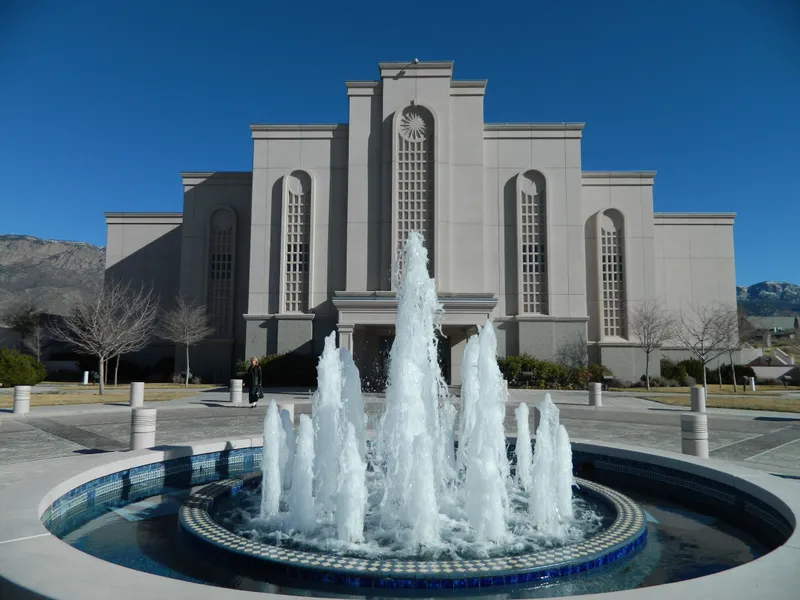
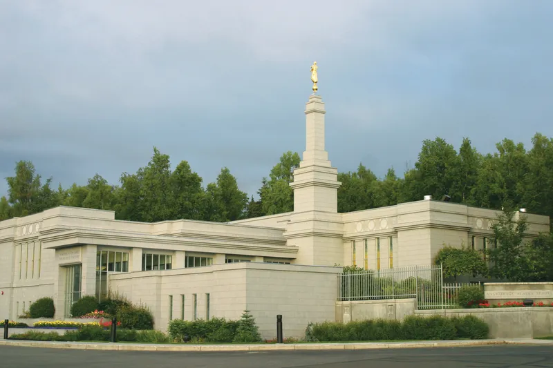
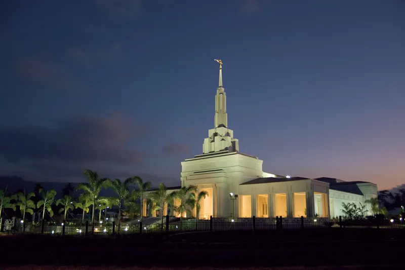
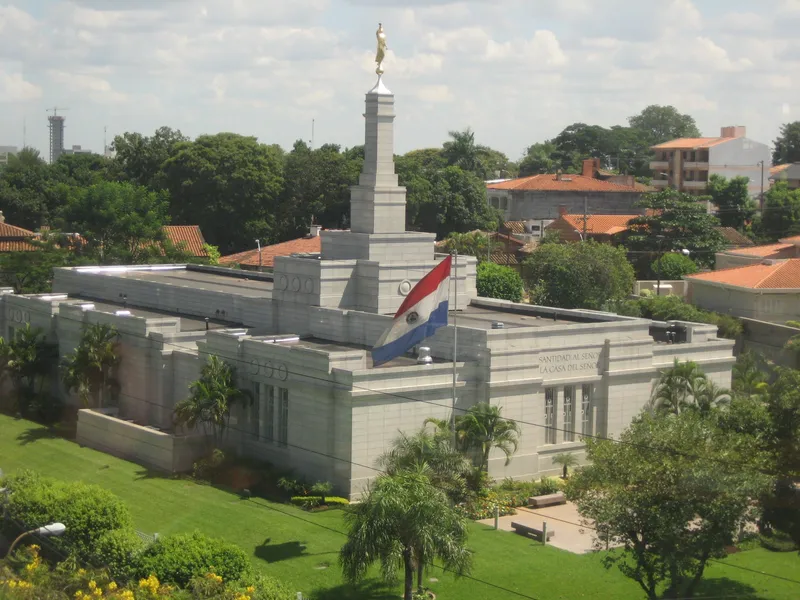
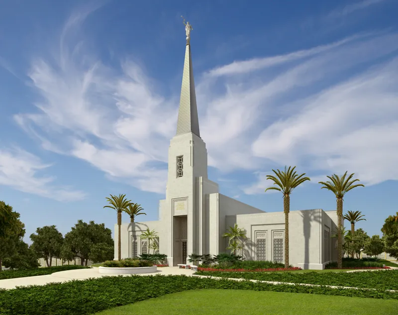
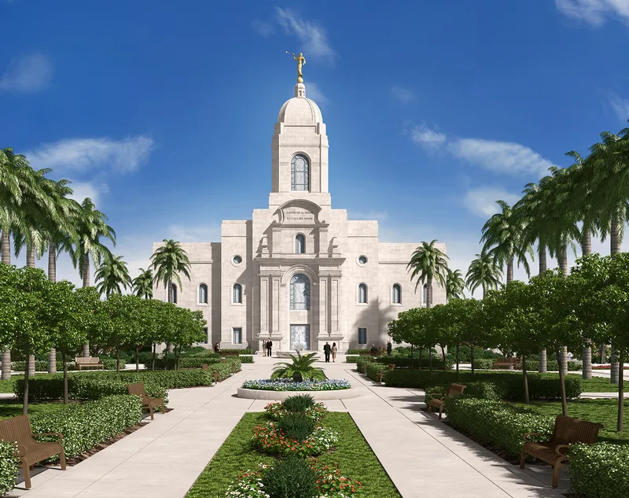

Aba Nigeria Temple
Captured at sunrise, featuring the grand intricately carved golden spires welcoming the morning light.

Accra Ghana Temple
A closer look monolithic pillars mapping historical folklore along the inner corridors.

Adelaide Australia Temple
The sacred lotus pond perfectly mirroring the temple complex during a calm, cloudless evening dusk.

Albuquerque New Mexico Temple
Diyas and traditional oil lamps illuminating the stone stairways during the annual evening prayer festival.

Anchorage Alaska Temple
Geometric mandalas carved meticulously into the central dome ceiling, representing cosmic balance.

Apia Samoa Temple
Perched high on the northern cliffside, completely shrouded in early winter morning fog.

Paraguay Temple
Surrounded by lush greenery, the temple stands as a beacon of peace and tranquility.

Abidjan Ivory Coast Temple
Overlooking the bustling city below, the temple exudes a sense of serenity and spiritual significance.

Arequipa Peru Temple
Overlooking the vibrant city below, the temple stands as a symbol of faith and community.